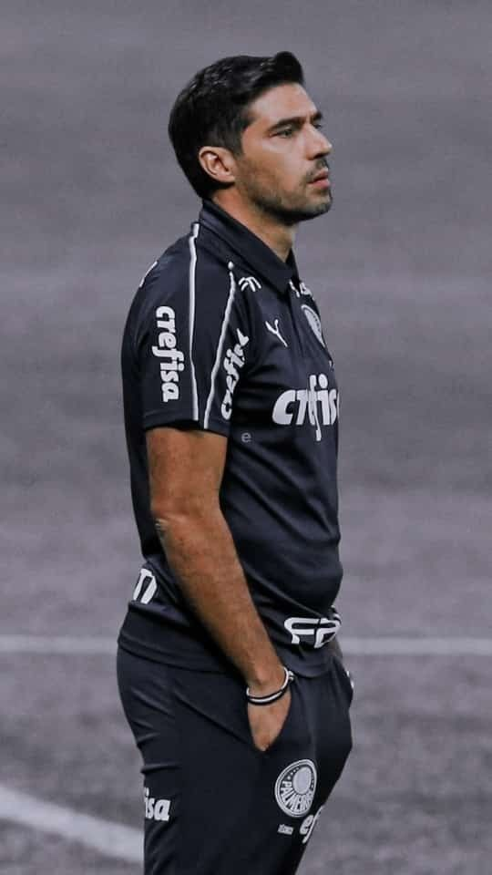
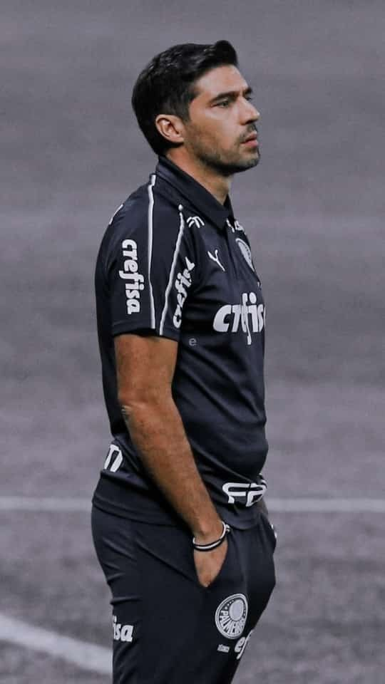
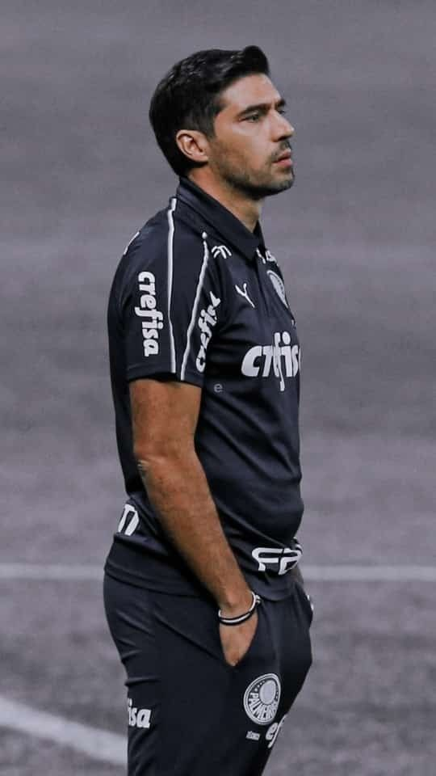
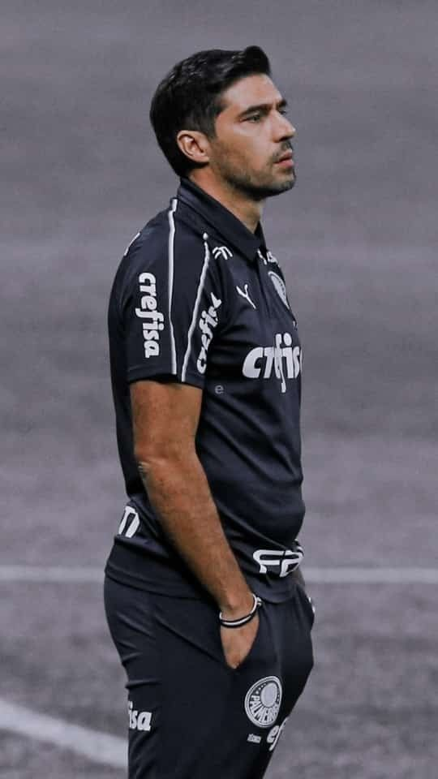

Em 2004 foi contratado pelo Braga. Na sua primeira época, afirmou-se como o lateral direito titular da equipa, fazendo um total de 37 jogos.
A segunda metade da época 2005–06 ao serviço do Sporting agradou o então técnico da equipa, Paulo Bento, que pediu para acionar a opção de compra. O Sporting contratou Abel junto ao Braga por 750 mil euros.
Abel Ferreira assumiu o papel de treinador da equipa de juniores no decorrer da época 2011–12 e venceu o Campeonato Nacional de Juniores.[4] Fez mais uma época ao comando dos juniores até ser promovido a treinador da equipa B em 2013–14,
Em fevereiro de 2015, Abel Ferreira foi convidado para assumir o papel de treinador da equipa B do Braga, cargo que manteve até abril de 2017, altura em que Abel Ferreira foi promovido a treinador da equipa principal.
Em julho de 2019, depois de completar duas épocas e meia como treinador principal do Braga, Abel Ferreira foi anunciado como treinador principal do PAOK, o campeão nacional grego em título.
O Palmeiras pagou a multa rescisória de €600 mil para poder levar o treinador português.Titulos Com o Palmeiras,Copa Libertadores da América: 2020, 2021 Copa do Brasil: 2020